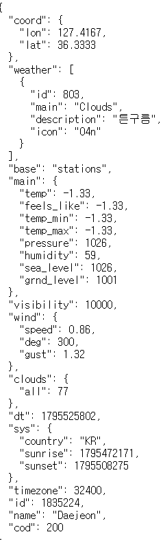
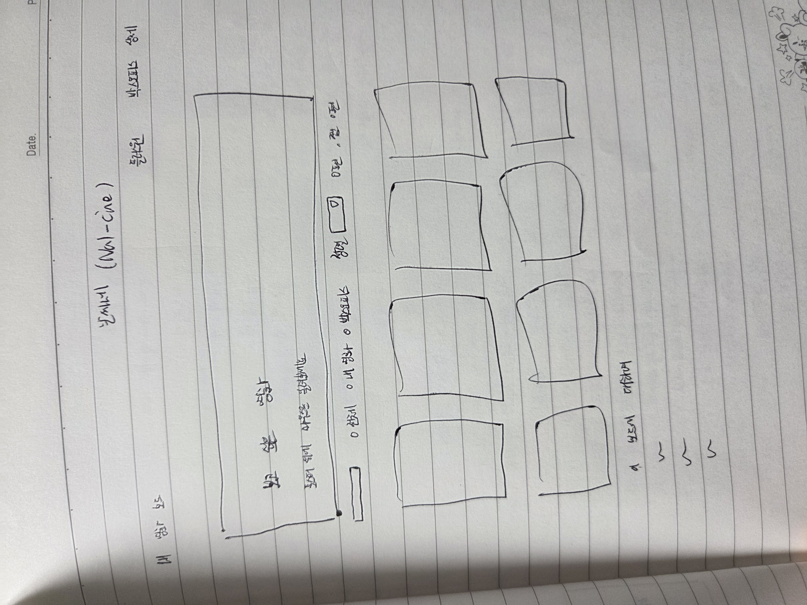
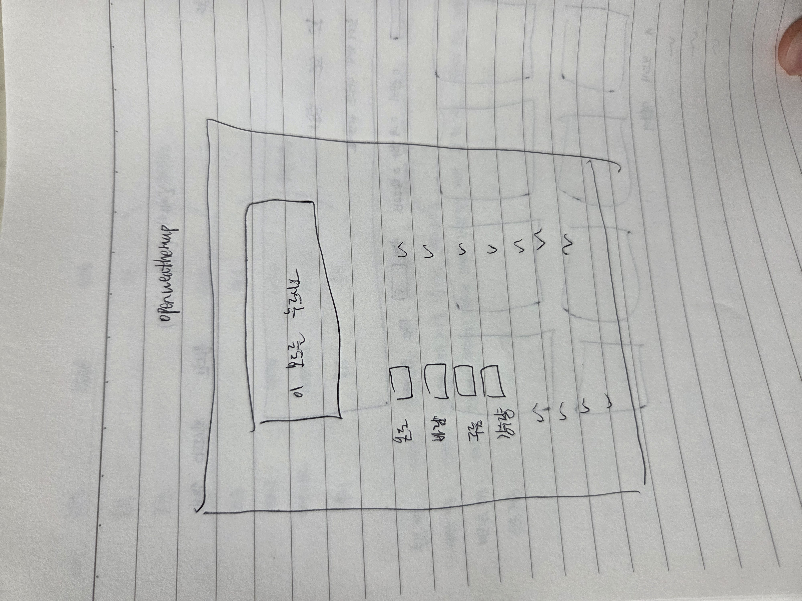

이름: 박세준 GitHub 아이디: nazign
누구를 위한 사이트: 최고의 날씨에 영화를 보고 싶은 사람들을 위한 사이트
플러스원 페이지 이름: openweathermap
한 줄 소개: 날씨 알려주는 사이트
| API | 제공기관 | 대표 요청 주소 | 키 이름 | 키 발급 상태 |
|---|---|---|---|---|
| current weather data | openweathermap | http://api.openweathermap.org/data/2.5//weather?q={city}&appid=KEY&lang={lang}kr&units=metric |
weather key |
발급 완료 |



| 주차 | 계획 |
|---|---|
| 13주차 | 전체 HTML/CSS 기본 틀 완성 및 박스오피스 API 연동 |
| 14주차 | 상세 페이지, localStorage 기반 보드 기능, 플러스원 페이지 구현 |
| 15주차 | 예외 처리, 디자인 마무리, GitHub Pages 배포 및 최종 점검 |
| 예상 위험 | 대안 |
|---|---|
| KOBIS API에 영화 포스터 이미지가 제공되지 않음 | TMDB API를 함께 호출해 영화 제목으로 포스터 이미지를 매핑하고, 없을 경우 기본 이미지 표시 |